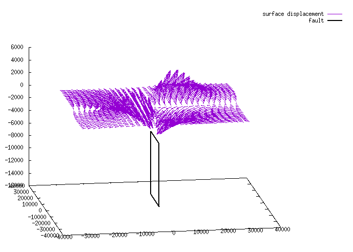

Dislocation Modeling using GTdef(V_3.2)
- Basic Introduction
- GTdef Code and How to Download it
- The Input File
- Simple Planar Forward Model
- Uniform Slip Model Inversion
- Non-Uniform Slip Model
- Checkerboard Testing
- Ingesting External Green's Functions
- References
Sections of the GTdef model
(Clicking on section heads will return to the Table of Contents)-
Introduction
Manual developed by Derrick Murekezi and Andrew Newman
-
GTdef Code and How to Download it
-
The Input File
- Model parameters and data are combined in one input file.
- Forward and inverse models are mixed and distinguished by the range [min max]. If parameter min == max (e.g. 0 == 0), then the parameter is fixed
- Output files can be, and are often used as subsequent input files. For example, an inversion will produce model parameters that you may want to use to predict deformation away from the data that were used in the inversion.
- No specific order is required for specifying parameters
- The first column is important to identify the data type. Flag is not case sensitive.
- Information within parameter rows are all white-space seperated.
- All parameters use the same units, defaulting to meters for each length of fault components, slip magnitudes, and measurement data.
- Angles are described in degree
- Depths are too reported in meters and are increasing going into the earth.
- Any line preceded by a hash
'#' is treated as a comment and is ignored. - The only reqirements for the most simple input file are at least one fault line, and one 'data' line, describing the parameters for each. All lines are characterized by their first field and the line order does not matter.
- FAULT Types method used to describe fault [1-4], external geometries [5-6], or external Green's functions [7]
- = uniformly or distributed slipping fault defined by one endpoint, fault length, and strike (ss ds ts)
- = uniformly or distributed slipping fault defined by two endpoints (ss ds ts)
- = uniformly or distributed slipping fault defined by one endpoint, fault length, and strike (rake rs ts)
- = uniformly or distributed slipping fault defined by two endpoints (rake rs ts)
- = external geometry with (ss ds ts)
- = external geometry with (rake rs ts)
- = external green functions
- The fault model defines a fault by its location in terms of longitude then latitude (or x then y if using a local coordinate system), its depth, strike and dip, slip parameters, and the number of subfaults within the model.
- FAULT Parameters (for fault type 1)
- flt = [ lon lat z1 z2 len str dip ss ds ts ss0 ssX ds0 dsX ts0 tsX ]
- lon,lat (or xx,yy) - one endpoint describing the surface projection of the faults in either geographic (default), or a local cartesian coordinate system
- z1 - vertical burial depth, describing top of slipping portion of fault [≥0]
- z2 - vertical locking depth, describing the bottom of slipping fault [≥0]
- len - fault length [≥0]
- str - strike from the endpoint describe above (degree CW from N) [0-360]
- dip - downward from horizontal, and right looking in the strike-direction [0-180]
- ss - strike-slip motion (left-lateral +)
- ds - dip-slip motion (thrust +)
- ts - tensile motion (opening +)
- ss0,ds0,ts0 - lower bounds for slips
- ssX,dsX,tsX - upper bounds for slips
- nd,ns - number of subfaults along-dip, and along-strike
- DATA Types
Depending on data type both the data type identifier (first column) and the data-type number (second column) will change as described below..- point - data described at a single point at the surface (e.g. GPS).
Point-types are:- = vertical component only
- = east, and north components
- = east, north, and vertical components
- los - a 1-D data point of arbitrary orientation (e.g. line-of-site to SAR satellite).
LOS-types are:- = displacement in direction of LOS (e.g. toward satellite)
- = phase change in LOS direction (not implemented yet)
- baseline - a baseline defined between two sites.
baseline-types are:- = length change only
- = east, north, and vertical components
- = east, north, vertical,and length change components
- profile - a line defined by two endpoints with evenly distributed data points.
- grid - a parallelogram defined by the lower-left (lon1,lat1) and upper-right (lon2,lat2) corners with data points parallel to the sides.
- point - data described at a single point at the surface (e.g. GPS).
- DATA parameters
The data-types described above will use differing parameters. Their meaning and convention are describe here.- lon(x),lat(y),z - horizontal location and elevation (positive upward) [m]
- Erot,Nrot - rotation angles for the East and North axis of grid [degree; + CW] (-90 90)
- Ue,Un,Uv - surface displacements in East, North, and Vertical directions [m]
- Ul - length change between two sites [m]
- ULOS - surface displacement in LOS direction [m]
- eUe,eUn,eUv,eUl - standard error for displacements and length change [m]
- eULOS - standard error for surface displacement in LOS direction [m]
- LOSdirE,LOSdirN,LOSdirV - unit vector pointing from the ground toward the satellite (LOS direction)
- N,Ne,Nn - number of data points, and number of columns and rows
- wavelength - wavelength of signal for LOS (1/2 the SAR satellite natural wavelength)[not yet implemented]
- weight - weight for incorperating different type of data {1}
-
Simple Planar Forward Model
- We will create a vertical planar fault approximately 20 km long, with 1 meter, strike-slip motion, buried between 5 and 15 km depth. The output will describe the spatial deformation every 2 km across a 60x60 km grid surrounding the fault.
- To keep the algorithm from attempting an inversion, it is important that all slip parameter ranges for a given slip-type on a fault block have equal value (i.e. ss0=ssX, ds0=dsX, and ts0=tsX in this example).
- If all range values are set to zero
'0' , the initial value will be used. Here, we will have 1m of left-lateral (+) strike-slip that will not vary (all range parameters are set to zero). - Input files should all end in
.in - The input file can be created in your favorite text-editor (e.g. vim). For simplicity here, we'll just direct stdout from an echo-command into a file called
local1.in . The% represents a shell prompt.% echo " coord local
# otherwise it will expect geographic coordinates #fault type name lon1 lat1 lon2 lat2 z1 z2 dip ss ds ts ss0 ssX ds0 dsX ts0 tsX Nd Ns fault 2 myfault 0 -10e3 0 10e3 5e3 15e3 90 1 0 0 0 0 0 0 0 0 1 1#grid name Erot Nrot lon1(x1) lat1(y1) lon2(x2) lat2(y2) Ne Nn grid 1kmx1km 0 0 -30e3 -30e3 30e3 30e3 31 31 " > local1.in - To run
GTdef , you must call up matlab (interactive and gui are not necessary). - Be sure the current version of GTdef is in your path. You can check this using the
path function, and add it usingaddpath .# within matlab > addpath('/path/to/GTdef/v3.2/unstable/')%replacing with your actual path - The processing code that oversees both forward and inverse models is
GTdef and is called with just the input file name, and optionally, the number of processors you'd like it to use on your machine. By default, it will use all available processors if not defined.# within matlab > GTdef('local1.in',1)% will run on '1' core. - This will create an output file called
'local1_fwd.out' that will repeat the model, and give predicted results for the defined grid locations (now as'point' data-type). - Quick and dirty visualization can easily be achieved using the freely available gnuplot program. This allows us to look at the full 3D vector field.

# first comment out all lines that are not output data using vim or similar. (not shown) % gnuplot gnuplot> set ticslevel 0.0# removes empty whitespace below plot gnuplot> splot 'local1_fwd.out' u 4:5:(0):($7*1e5):($8*1e5):($9*1e5) w vect t "surface displacement"# just the surface results amplified to see variability #If you're more adventurous, you can plot the fault too (this assumes the fault is vertically dipping). gnuplot> splot "< awk \'$1==\"point\"{print $0}' local1_fwd.out" u 4:5:(0):($7*1e5):($8*1e5):($9*1e5) w vect t "surface displacement",\ "< awk '$1==\"fault\"{printf \"%f %f %f\\n%f %f %f\\n%f %f %f\\n%f %f %f\\n%f %f %f\\n\", $4,$5,-$8,$6,$7,-$8,$6,$7,-$9,$4,$5,-$9,$4,$5,-$8}' local1_fwd.out" w l lw 2 lt -1 t "fault"# use the cursor to move around the data -
Uniform Slip Model Inversion:
- From Newman et al. (2010)
pull the coastal subsidence data from sheet 3 of the excel spreadsheet.Convert this data to the GTdef input format for vertical only data. Errors are approximately 0.1 m on all data, and
all data were measured using the same methods, and likely have similar error values, thus they should all be given equal weight.
#point type name lon lat z Uv eUv weight point 1 Rendova-Rendova_Harbor 157.33602 -8.40359 0.0 -0.15 0.10 1.0 point 1 Rendova-Epata_Creek 157.30622 -8.43730 0.0 0 0.10 1.0 point 1 Rendova-Mbaniata 157.26260 -8.63325 0.0 -0.70 0.10 1.0 point 1 Rendova-Hofofo_Pt 157.19633 -8.56530 0.0 0 0.10 1.0 point 1 Rendova-Habila 157.22920 -8.60414 0.0 -0.60 0.10 1.0 point 1 Rendova-Rava_Pt 157.40336 -8.72264 0.0 -0.60 0.10 1.0 point 1 Tetepare-Tofa 157.53432 -8.75576 0.0 -0.40 0.10 1.0 point 1 Tetepare-Jetty_near_Ecolodge 157.44286 -8.72234 0.0 -0.25 0.10 1.0 point 1 Tetepare-Ecolodge_boat_ramp 157.44321 -8.72120 0.0 -0.30 0.10 1.0 point 1 Rendova-Rano 157.32886 -8.62969 0.0 -0.50 0.10 1.0 point 1 Rendova-Vankuva 157.33953 -8.60934 0.0 0 0.10 1.0 point 1 Rendova-Kofi_Bay_village 157.33874 -8.6039 0.0 -0.40 0.10 1.0 point 1 Rendova-Mauru_Loging_Camp 157.39881 -8.5137 0.0 -0.30 0.10 1.0 point 1 Rendova-Ugele 157.39921 -8.44959 0.0 0 0.10 1.0 - Build a model for a single fault with no subfaults. Use your favorite geographic viewer (geomapapp, google earth, google maps) to define the
boundaries of a megathrust fault. Use the CMT focal mechanism to define the dip (If you haven't used this before, it is a
good opportunity to become familiar with my code
searchCMT . - Define the fault to allow for a reasonable range of slip values. Note that since we only have limited vertical data
here, it would be unwise to consider any transverse (strike-slip) motion on the fault. As well, given nature abhors a void, it would
be unwise to choose opening on this model. Once you've set up your data and your fault with a slip range, you're ready to model.
# fault
#fault type name lon lat z1 z2 len str dip ss ds ts ss0 ssX ds0 dsX ts0 tsX Nd Ns fault 1 slm 157.0990 -8.6920 0 5200 50000 125.0 158.0 0 0.1 0 0 0 0 100 0 0 1 1#point type name lon lat z Uv eUv weight point 1 Rendova-Rendova_Harbor 157.33602 -8.40359 0.0 -0.15 0.10 1.0 point 1 Rendova-Epata_Creek 157.30622 -8.43730 0.0 0.0 0.10 1.0 point 1 Rendova-Mbaniata 157.26260 -8.63325 0.0 -0.70 0.10 1.0 point 1 Rendova-Hofofo_Pt 157.19633 -8.56530 0.0 0.0 0.10 1.0 point 1 Rendova-Habila 157.22920 -8.60414 0.0 -0.60 0.10 1.0 point 1 Rendova-Rava_Pt 157.40336 -8.72264 0.0 -0.60 0.10 1.0 point 1 Tetepare-Tofa 157.53432 -8.75576 0.0 -0.40 0.10 1.0 point 1 Tetepare-Jetty_near_Ecolodge 157.44286 -8.72234 0.0 -0.25 0.10 1.0 point 1 Tetepare-Ecolodge_boat_ramp 157.44321 -8.72120 0.0 -0.30 0.10 1.0 point 1 Rendova-Rano 157.32886 -8.62969 0.0 -0.50 0.10 1.0 point 1 Rendova-Vankuva 157.33953 -8.60934 0.0 0.0 0.10 1.0 point 1 Rendova-Kofi_Bay_village 157.33874 -8.6039 0.0 -0.40 0.10 1.0 point 1 Re ndova-Mauru_Loging_Camp 157.39881 -8.5137 0.0 -0.30 0.10 1.0 point 1 Rendova-Ugele 157.39921 -8.44959 0.0 0.0 0.10 1.0 - If the model converges, analyze the output, use the "_kp" file to create an input for the forward model(keep in mind the difference between the inverse and forward model fault parameters) to predict the deformation for the entire region. Rename the new input file to forexample "solomon_inv.in" and the fault dimentions below and run a forward model. The output should give a data file to plot and visualize in gnuplot.
#fault type name lon lat z1 z2 len str dip ss ds ts ss0 ssX ds0 dsX ts0 tsX Nd Ns fault 1 slm 157.09896 -8.69204 0.00e+00 5.20e+03 5.00e+04 125.00 158.00 0.000 5.167 0.000 0.00 0.00 0.00 0.00 0.00 0.00 1 1#grid name Erot Nrot lon1 lat1 lon2 lat2 Ne Nn grid Solom_region 0 0 156.4 -9.3 158.1 -7.9 200 200 - Ploting the results.
# first use awk to create a file of relevant columns awk '$1~"point"{print $4,$5,$9}' solomon_inv_fwd.out > solomon_plotdata.xyz# Quick and easy plotting using Gnuplot on linux and other platforms #type: gnuplot # within the dialog. Once plotted use the cursor to move around the data gnuplot> splot 'solomon_plotdata.xyz' u 1:2:(0):($3/1e1):($4/1e1):($5/1e1) every 11 with vectors -
Non-uniform Slip Model Inversion:
- Choose your kappa value (parameter that controls roughness) to range between 0 to 5000 by 500.
kappa 2 0 5000 11
- Setup your fault to now have 12 subfaults, 4 patches along-strike and 3 patches along-dip.
#fault type name lon lat z1 z2 len str dip ss ds ts ss0 ssX ds0 dsX ts0 tsX Nd Ns fault 1 slm 157.0990 -8.6920 0 5200 50000 125.0 158.0 0 0.1 0 0 0 0 100 0 0 3 4 - Invert, and explore your results. Try plotting misfit vs. roughness to see how your choices in kappa affect these results.
- Once you've chosen your optimal kappa value, run a new forward model, and repredict deformation.
- Finally, you might want to look at your results in a geographic reference system. I've created a GMT script to do this,
but you must modify it for your purposes. As well, I haven't gotten the slip models to plot on top of the geographic ones, so you
may want to do this by hand using your favorite vector graphics program like Adobe Illustrator. If you do get your version
to correctly plot on the map without any one-time tricks, let me know and I will update the online version.
The code: slipmodel.gmt - Another code that may be of use is GTdef_interface.gmt which can be used to plot an individual slip model
along with the mistfit/roughness trade-off. You again may need to modify this for your needs.
% GTdef_interface.gmt *kp*.out %
# view your results % gs *.ps# page through your numerous ps files to observe the variance with increasing smoothness -
Checkerboard Testing:
Okay, you've gotten some solutions by now, however how are you certain that your results are of value?
This is a big question that is quite difficult to rightfully answer. One quote that often comes to mind here is
"All models are wrong, but some are useful" attributed to George Box, a statistician.
- Create an input model with subfaults that are approximately as large as characteristic changes you observe in your solutions. Each subfault alternates between 0 and 1 unit of slip.
- Run a forward model, and predict the deformation at each of the sites you used for your original inversion.
- If you have error information add these values so they fractionallly scale with the difference between your original data and their error. (e.g 10 cm error for 50 cm original displacment) should now scale to 1 cm error for predicted 5 cm displacemnt).
- Use these synthetic data and errors to run a new inversion and compare the output to the original checkerboard. If the input model matches the inversion, then you have great resolution. Where you start to signficantly deviate from your checkerboard, you lose resolution. One could be more quantitative than this, but it is usually best to trust your judgement here--it's kept you alive this long.
-
Ingesting External Green's Functions
-
References:
- Okada, Y. (1985). Surface deformation due to shear and tensile faults in a half-space, Bull. Seism. Soc. Am. 75, 1135-1154.
- Chen, T., A. V. Newman, L, Feng, H. M. Fritz (2009), Slip Distribution from the 1 April 2007 Solomon Islands Earthquake: A Unique Image of Near-Trench Rupture, Geophys. Res. Lett., 36, L16307, doi:10.1029/2009GL039496.
- Feng, L., A. V. Newman, J. M. Protti, V. González, Y. Jiang, T. H. Dixon (2012), Active Deformation near the Nicoya Peninsula, Northwestern Costa Rica, Between 1996 and 2010: Interseismic Megathrust Coupling, J. Geophys. Res., 117, B06407, doi:10.1029/2012JB009230.
The code is developed so that one could perform both forward models that predict ground deformation and inverse models that use data with errors and some modeling constraints to predict information about the source. The source in either case can be either simple rectangular slips along the plane, orthogonal to it or some combination of both.
Requirements: Algorithms are written in Matlab and require the
Below, we will first step through some forward models, and eventually inversions.
- Current Version : GTDef 3.2
- Github Repository for Download :
https://github.gatech.edu/an77/GTDef.git
The code includes a detailed input file (click here to download/view) that describes the structure of the input file for both the foward and inverse models. The file describes the model parameters and how they differ for different models run. Below we have included snapshots of the input file for each example model.
Ground rules for the input file include:
Fault characterization:
Each fault must fall into one of the below 7 catagories described by the nature of slip on the fault, fault parameters, external geometries, or simply extrenal Green's functions. A fault line may look like (example shown in above-linked input file):#fault type name lon lat z1 z2 len str dip ss ds ts ss0 ssX ds0 dsX ts0 tsX Nd Ns fault 1 gnrc-1 -120.2000 38.0000 3e3 15e3 100e3 170.0 25.0 2.5e-3 1.2 0 0 0 1 1.5 0 0 1 1 # inverted only on dip-slip between 1 and 1.5 m
Data characterization:
Every input file needs to desribe either real data, or points in which you want to predict the surface motions. Each data line begins with its unique identifying name describe below. A data line for 3-component GPS point data may look like (also from above-linked input file):#point type name lon lat z Ue Un Uv eUe eUn eUv weight point 3 rdom -118.8979 37.6770 2417.4049 9.6 1.1 36.1 1.0 1.0 1.3 1
Other Model Parameters:
To be desribed (e.g. coord, smooth, greensfns, matfile, resolution)We'll start with the most straight-forward case of a single vertical fault plane with strike-slip motion on the interface.
Example Forward Model Run:
The simplist model includes just one fault and one data-point ran in a forward sense to prediction deformation at that data-point. We will not stray significantly from there.Input:
While the simplified forward problem exists:
where Okada (1985) describes the Green's function,
For a least-squares solution, the simplified inversion becomes:
Because we expect there to be interdepence between adjacent model patches, we can describe an additional set of equations to apply to the inversion and regularize the final model. Every model patch mi can describe its model roughness as the Laplacian of that component of slip (e.g. ds, ss, ts). We will try to minimize that roughness for each slip component of the model,
where
where
so:
Input File:
This problem is a little more tricky, as we will quickly go from an overdetermined problem (more data than model paremeters),
to an underdetermined problem.
In order to get around this, and to solve for realistic slip, we constrain the interdependence between individual slip patches.
The most popular way to do this is to define minimize the 'roughness' of the slip patch, as defined in
Harris and Segall (1987),
but more concisely in Jónsson_et al_(2002).
The method works to minimize the 2D second-order derviative of the slip surface so that large changes are constrained within a certain value.
The way it's been implemented here is that a series of roughness solutions are determined, all yeilding different misfits to the data.
It is a somewhat arbitrary decision to chose the optimal roughness parameter. Usually this is done by evaluating the kink-point by which
additionally smooth results significantly increase misfits.
In order to valididate a model, it would be useful if you had independent information, like mapped fault offsets, or tsunami results. However, in the absense of this, one must work with the data we used for the inversion in the first place. This is normally done by creating a checkerboard model and determining whether the predicted 'data' are sufficient to recreate the model.
dmurekezi3
 gatech.edu, anewmangatech.edu | Updated:
Tue May 19 13:23:19 EDT 2020
gatech.edu, anewmangatech.edu | Updated:
Tue May 19 13:23:19 EDT 2020